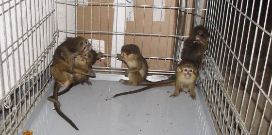

Únete a la actividad el próximo 14 de Mayo
Más información en tu asociación local
Cada año miles de "primates no humanos" son transportados en avión alrededor del mundo para acabar sufriendo y muriendo en laboratorios. Estos monos vienen de paises como Isla Mauricio, China, Vietnam, Camboya y Barbados. Algunos son capturados en estado salvaje, otros se crían en cautividad, en grandes instalaciones. Se les arranca de sus grupos familiares, se “empaquetan” en pequeñas cajas de madera y se envían como carga en las bodegas de los aviones de pasajeros donde deben soportar la falta de ventilación, el ruido, cambios de temperaturas y retrasos que les obligan a padecer larguísimos viajes alrededor del mundo.
La Coalición ECEAE – Coalición para la Abolición de la Experimentación Animal, ha conseguido que muchas compañías aéreas dejen de colaborar en ese tráfico cruel, entre otras, las europeas British Airways, Finnair, Alitalia, Iberia, Lufthansa, Areolíneas Checas, Swiss International Airlines, Brussels Airlines y fuera de Europa, Delta Airlines, Eva Air, Northwest Airlines, South African Airways, United Airlines y China Airlines.
Air France es en la actualidad la compañía aérea más grande de transporte de pasajeros que todavía participa del cruel transporte de primates destinados a la experimentación, desde la Isla Mauricio y Vietnam a laboratorios de Europa y los Estados Unidos.
Estos son algunos datos comprobados:
- El 24 de Junio de 2011, transportó 85 macacos de cola larga de la Isla Mauricio a Estados Unidos.
- El 9 de Marzo de 2011, 100 macacos de cola larga de Vietnam a Francia.
- El 12 de mayo de 2011, 20 macacos desde Vietnam a Estados Unidos.